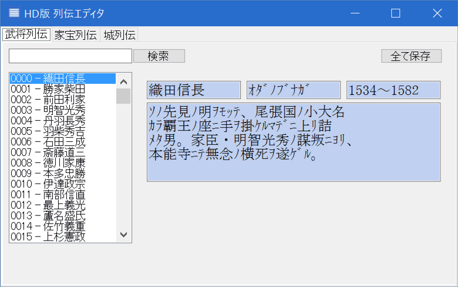
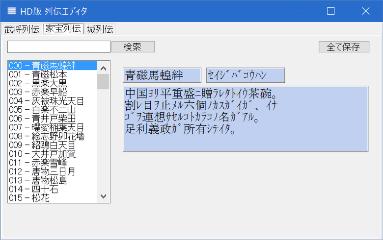
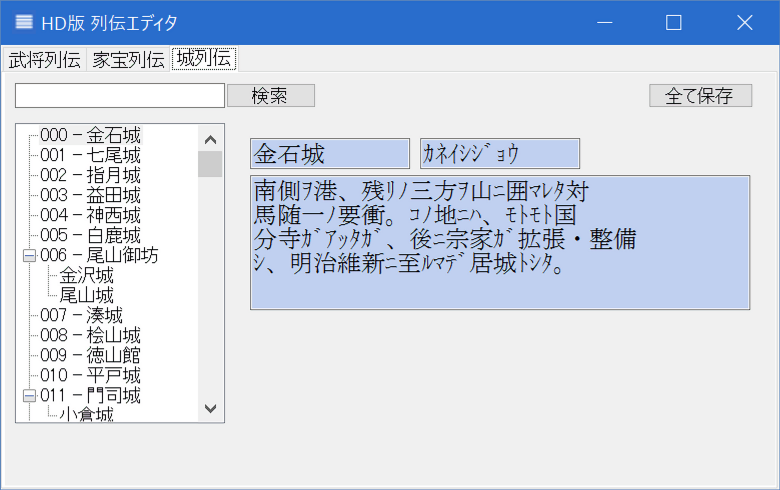
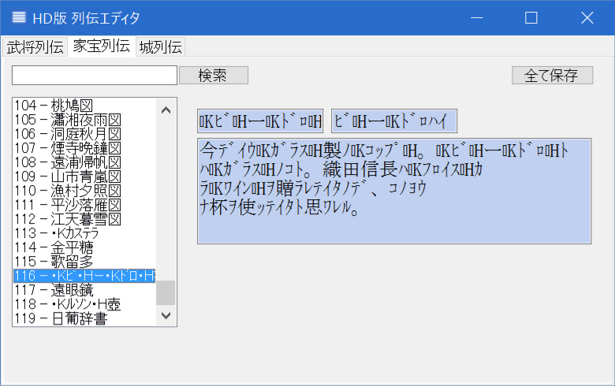

列伝エディタでは、以下の３つの項目を編集することが出来ます。



上記、.zipファイルを解凍し、HD.RetsudenEditor.exe を
「天翔記フォルダ以下のMSGフォルダ」に入れる。
HD.RetsudenEditor.exe を実行。
「src.zip」は、HD.RetsudenEditor.exe を作成するためのC++/CLIソースファイルとなります。
実行する上では必要ありません。
ご自分で機能を変更したい場合などの用途に利用してください。
エディタ上の「半角カタカナ」はゲーム上で「全角ひらがな」となります。
「全角カタカナ」を利用するためには、が必要です。

この特殊な記号は制御文字であり、キーボードから入力することは出来ません。
既に存在するものをコピー＆ペーストしてください。
列伝エディタを使って元のファイルを変更したとしても、
Steamの「ゲームキャッシュの整合性を確認」をすると、
オリジナルのファイルへと修復され戻ってしまいます。
このため、編集が終了したら、オリジナルのファイル名で運用するのではなく、
ファイル名を別名にして、HD.version.SDKによって、読み込み先のファイルを変更するのがお勧めです。
こうすればStreamの更新による影響を気にすることなく、ファイルの編集と利用が可能となります。